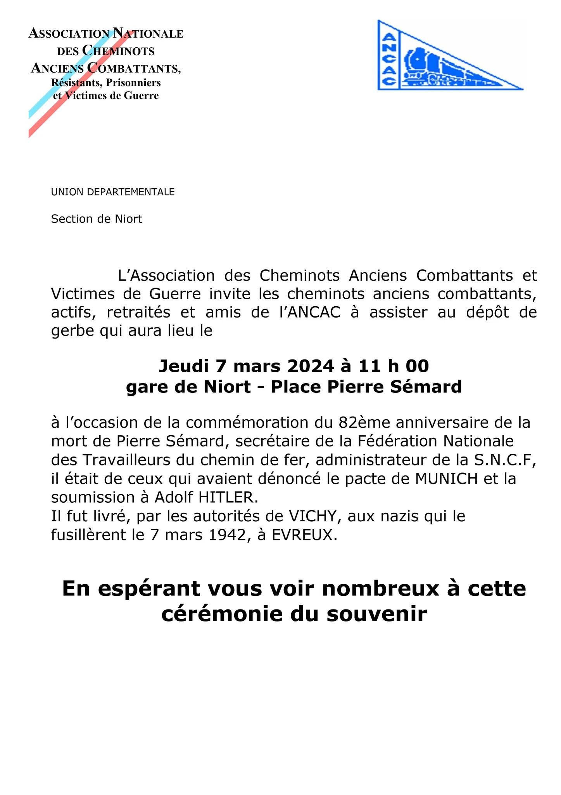

Annonce archivée
À Niort, un dépôt de gerbe pour Pierre Semard le 7 mars
Date indiquée par Facebook · 5 mars 2024
Repères éditoriaux
L’association des cheminots anciens combattants annonçait un dépôt de gerbe à 11 h devant la gare de Niort, 82 ans après l’exécution de Pierre Semard à Évreux.
Texte conservé avec la publication
Commémoration du 82ème anniversaire de la mort de Pierre SEMARD
Né le 15 février 1887 à Bragny-sur-Saône (Saône-et-Loire), Pierre SEMARD a été secrétaire général de la Fédération CGT des cheminots de 1922 à 1939, et secrétaire général du Parti communiste de 1924 à 1928. Il a été fusillé comme otage par les allemands le 7 mars 1942 à la prison d’Évreux (Eure).
L'association des cheminots anciens combattants procédera à un dépôt de gerbe le jeudi 7 mars 2024 à 11 heures Place Pierre Semard devant la gare de Niort.

Sources
Archive rouge · export Facebook · AR-0002-FB-01458
À lire aussi · À Châteaubriant, l’hommage du 22 octobre aux fusillés · Le lien d’origine